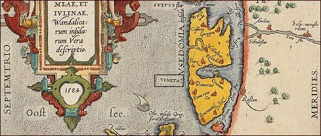

VINETA
Ton gant Johannes Brahms op. 42 N°2 (1860)
Barzhoneg gant Wilhelm Müller
Kempennet gant Christian Souchon (c) 2008
"Kartenn Rügen, Usedom ha Julin" gant Abraham Ortellus 1584 (SPK Berlin)
|
|
|
1. From the ocean's fathomless depths Sound, dull and muffled, evening bells, Bringing us wondrous tidings Of the old city and its spells. 2. Sunk in the depths of the waters, Its ruins lie below for evermore. Its pinnacles show gleams of gold Reflecting in the mirror of the sea. |
3. And the sailor who once has seen That magic gleam in the glowing sunset Forever sails to that same spot Even though cliffs threaten him all around. 4. From the heart's utmost depths Comes a sound like bells, dull and muffled. Ah, they bring wondrous tidings Of the love that it has cherished. |
5. There is sunk a beautiful world. Its ruins lie for evermore below. Like Heaven's golden rays they appear Oft in the mirror of my dreams. 6. Then I would plunge into the depths And sink into that wondrous glow; It is as if angels were calling me Into that magic city of old. |
"Vineta" kanet gant "Junges Consortium Berlin"
* Livadenn Ker Is (Galleg/Saozneg)*